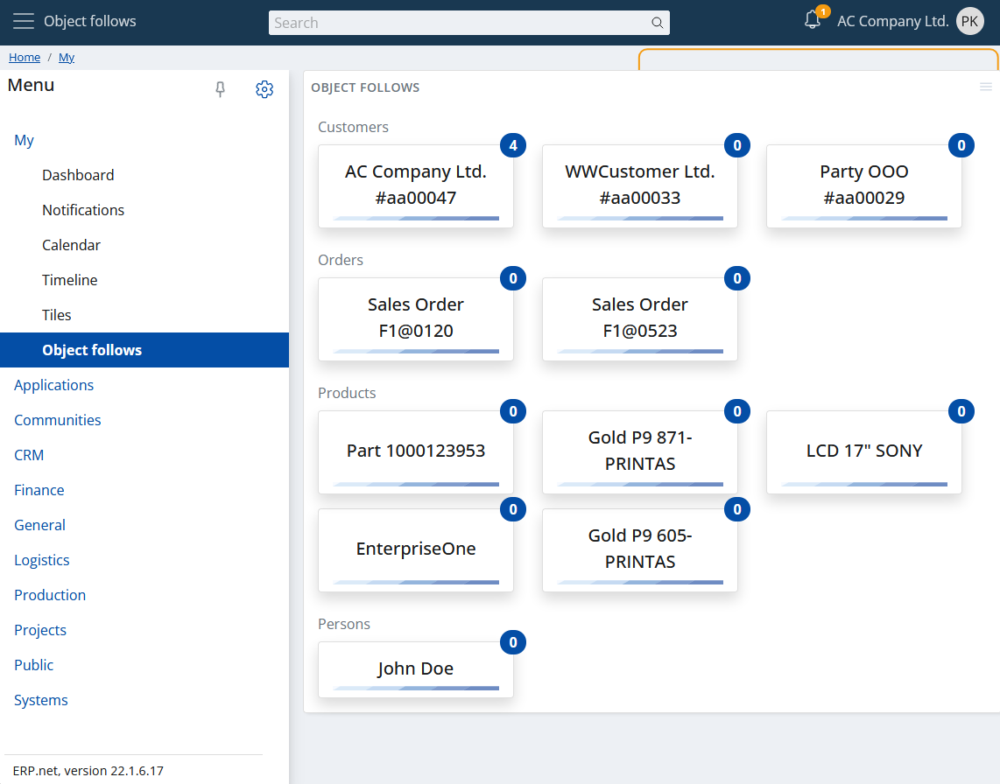

Overview
Social follows is a key aspect in the Social ERP.
The "following" process means that you are "subscribed" to specific objects- i.e. that you want to know when something happens in their context. As a result, you will start receiving individual notifications. Another detail is that a new tile will be automatically created in the My Object follows app. It will visualize the number of new notifications concerning you, and will always stay as you are following the corresponding object.
Starting an object follow can be done in two ways- manually and automatically.
(Un)follow an object manually
As the name suggests, this is done manually. To do this, open the object you want to follow and click on the star at the top right of the form.

When it's filled up, this indicates that you're already following the object. Accordingly, to stop following it, just click it again.

Auto object follow
Automatic follow of an object is also possible. Such an example is when you are mentioned in a discussion of an object that you have not yet followed. The moment this happens, in addition to your new "object follow", you will also receive a notification, containing who exactly mentioned you. More information can be found at Chatter mentions.
My apps - Object follows
"My Object follows" is the visualization of all objects, followed by you. Or in short your social follows. Like My Tiles, the key visual component here is the tile, but it looks a little different. The caption of the tile is the display text of the followed object, and the badge contains the number of your new notifications available.

Accordingly, a sample overall view of "My Object follows" looks like this:

The tiles are grouped according to the entity to which they belong.
Also, if you click on a tile, the form of the followed object will be opened.
Note
Although you have no notifications to the object you are following, its corresponding tile will be still displayed. The tile will disappear the moment the object is unfollowed.
Object follows as a widget
Like most My apps widgets object follows also supports their properties:
- You can show the object follows widget in each form of your choice.
- Only the object follows (i.e. the tiles), related to the form's context will be displayed.
Below you can see example pictures showing the object follows widget on a menu page as well as in a navigator form.